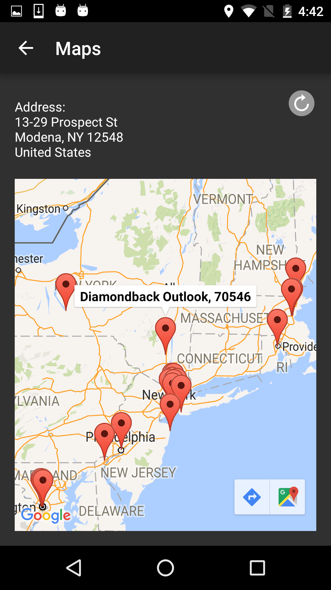

Concept
Moonlight is as self-powered bike wheel that comes along with an Android mobile application. The mechanical components and the software elements together ensure public safety for the biking community and helps recover theft. The Android app allows users to:
Have a look at our Poster!
Control Lights
Unathenticated Bluetooth connection between Arduino and app, will trigger 'stolen lights'.

Report Stolen Bike
Claim your registered bike as stolen.

View Lost Bikes
View other bikes lost within the proximity of your current location, as a list and Map
Role in Project

Programmed in Java
Used Google Maps and Geolocation APIs' to display information on Google Maps.

Retrieved & Stored Information
Stored user's claim of 'stolen bike' & retrieved information from Parse.

Process
-
What are the clients expectations?
After a series of meetings with the clients and the team, my teammates and I were able to understand the expectations of the clients, i.e to develop a companion app to promote a bicycle community, with the 3 main features.
-
UI Wireframing and Low Fidelity Prototype
After Preliminary Design Review presentation, I led the paper prototyping session and took the initiative to complete the low fidelity prototype using FluidUI (with limited interactions). The latter was presented during the Critical Design Review to clients, teaching faculty and peers.
-
Testing Low Fidelity Prototype
Upon testing the prototype on a few volunteers and receiving critiques, comments and suggestions from CDR, the UI was redesigned after discussing the test results with the team and clients. The UI at this point was changed from a light to dark theme to best match the idealogy of the project.
-
Viewing and Reporting stolen bikes
Using the Google Maps API and Geolocation API, the Maps feature was implemented. Testing it on an Android phone confirmed that location permission had to be set to ACCESS_FINE_LOCATION value in addition to ACCESS_COARSE_LOCATION to ensure precise and accurate coordinates were retrieved. User contact information was retrieved from PARSE database and Bike Index API to let users choose which piece of contact information they would like to display in the 'list of lost bikes'. In order to inform users of completed actions or turning on location services, alert dialogues and/or toasts were incorporated.

-
Improved Menu UI and Checked for Consistency
The menu UI was improved to include graphical icons that visually convey it's functions. Once all the other features were programmed, I checked for consistency across most frames.